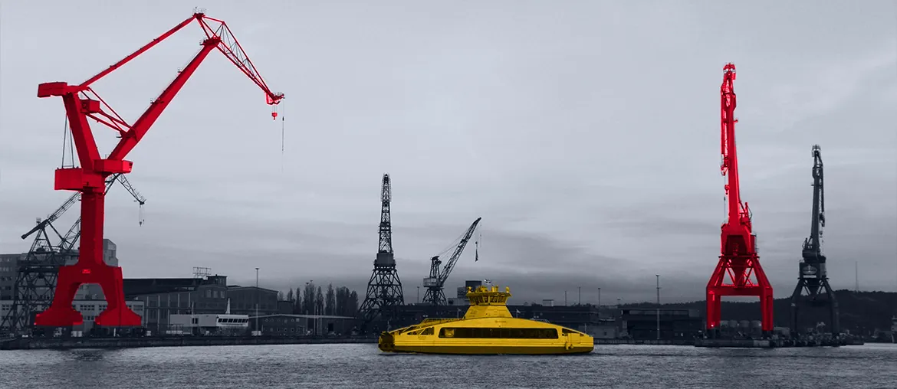

Map the launch path
Review one active customer launch, data flows, and release steps to find gaps that slow Product Passport setup.
We saw Altana is hiring a Senior Staff Software Engineer. The role touches large data, APIs, workflows, and customer launches. That usually means important product work needs senior ownership now.
The Senior Staff role says Altana is scaling complex product work. This is more than filling a seat. The platform connects product data, supplier links, AI workflows, and customer delivery. If senior ownership is thin, implementation teams can inherit architecture work. That can slow Product Passport rollouts and add support load.
Use a dedicated squad under Altana's product lead. The squad fills the Staff-level gap while your permanent search continues.
Review one active customer launch, data flows, and release steps to find gaps that slow Product Passport setup.
Build or harden APIs, FastAPI services, and Temporal jobs that move catalog and supplier data with clear ownership.
Add tests, logs, and deployment gates around high-risk workflows before customer data reaches production systems.
Document decisions and pair with Altana engineers, so the permanent Staff hire starts with clear context.
Two nearby examples from our delivery record:

Built a web data platform for a US and Canada manufacturer. It processes dealer, customer, and sales records each day.
Read the case study
Built real-time HMI workflows for port equipment using Python and Angular. The client cut the initial budget in half.
Read the case study